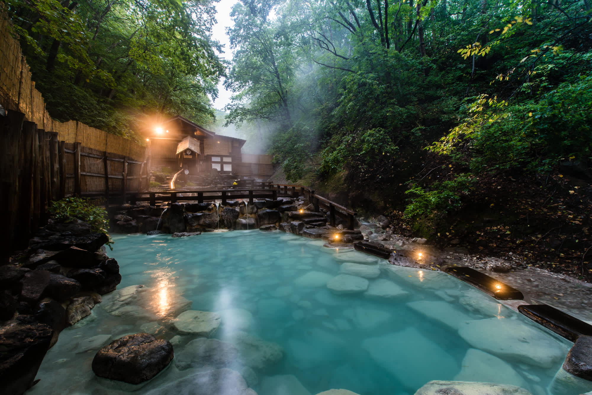

Discover some of the greatest places on the planet
Travel
A Guide to Japan
January 21. 2024, A. Samus

Japanese onsen
Japanese Onsen
Natural hot springs (温泉, onsen) are numerous and highly popular across Japan. Every region of the
country has its share of hot springs and resort towns, which come with them.
There are many types of hot springs, distinguished by the minerals dissolved in the water. Different
minerals provide different health benefits, and all hot springs are supposed to have a relaxing effect
on your body and mind. Hot spring baths come in many varieties, indoors and outdoors, traditional and
modern. Hot spring baths can be enjoyed at ryokan, hotels and public bath houses. An overnight stay at
an onsen ryokan, in particular, is a highly recommended experience to any visitor of Japan.
High rise, fast-paced and neon-lit, Tokyo is as futuristic as it is historical
As Japan’s capital and the world’s most populous metropolis, Tokyo offers tradition and innovation, and
unlimited opportunities to eat, shop and explore
Tokyo is located on Tokyo Bay in the Kanto region of Honshu, Japan’s largest island. The closest airport
airports are Haneda officially known as Tokyo International Airport, and Narita Airport, Japan's largest
international airport. Tokyo is known for its fashion and shopping, from the trendy shopping districts
of Harajuku and Shibuya, to the luxury flagships of Ginza.
Shinjuku is the thriving business district; a mix of gleaming skyscrapers and atmospheric back streets
with tiny bars. Asakusa is the heart of Tokyo’s downtown, with ancient temples and traditional stores.
Tokyo is a foodie paradise with more Michelin-starred restaurants than any other city in the world,
along with hundreds of cheap and delicious ramen shops.
Tokyo Weather.
Tokyo has mild spring weather, followed by hot and humid summers punctuated with typhoons. Autumn in
Tokyo is cool and fresh, followed by cold, dry winters. Snow is rare but has been known to fall in the
first few months of the year. The one week forecast for Tokyo is an accurate guide to the weather for
the coming week.
How to Get There
Tokyo is served by two international airports, Haneda and Narita. From there, you can reach central
Tokyo by regular or limousine buses, or have the option of the monorail (Haneda only) or trains. The
Narita Express (N'EX) and Keisei Skyliner are JR and privately-run trains that connect Tokyo and Narita
International Airport.
 Vistas
Vistas


 Wildlife
Wildlife